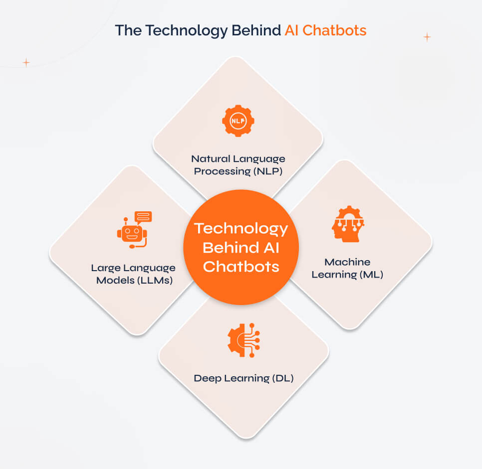
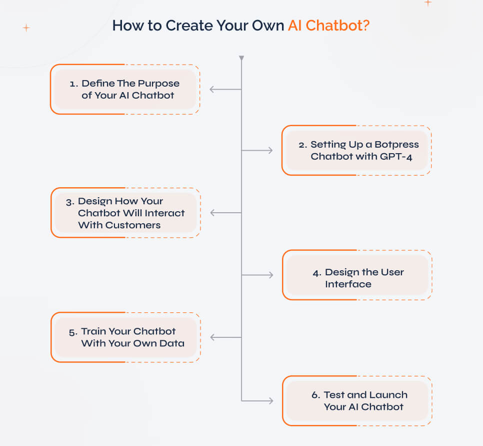
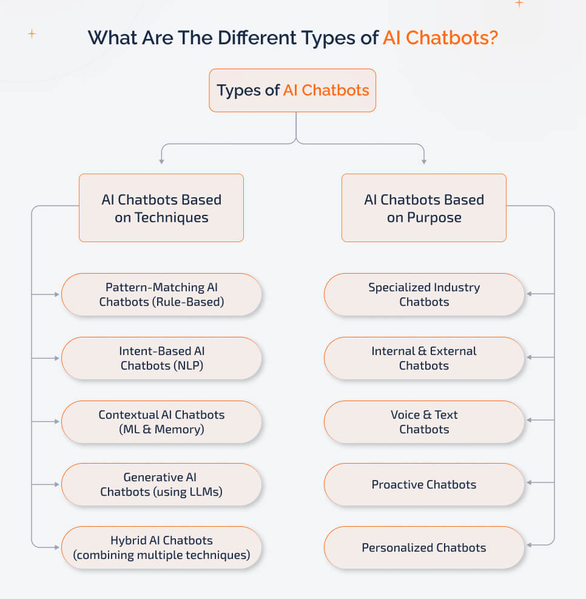
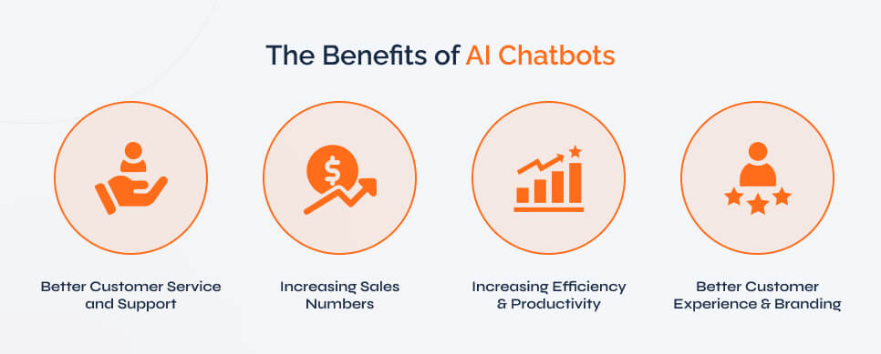
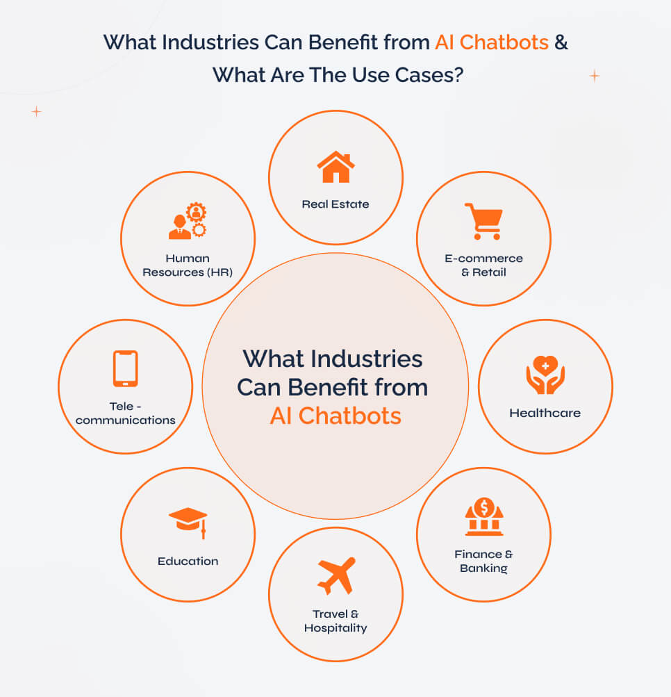
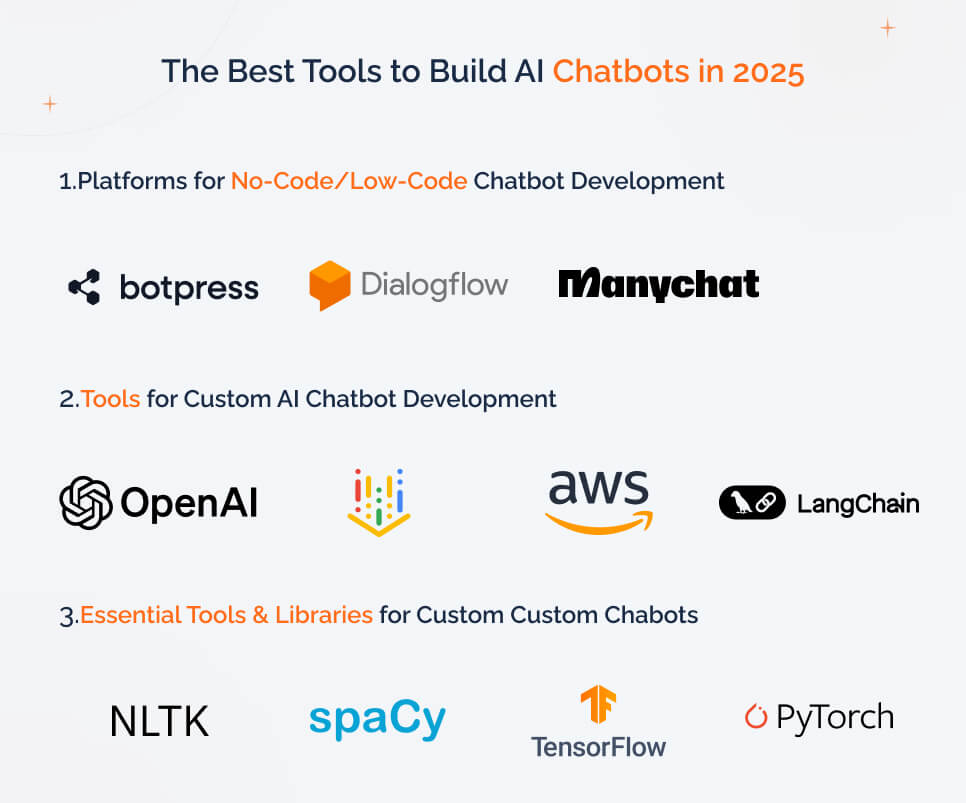

AI chatbots are everywhere, from customer support to large language models (LLMs) like ChatGPT and Gemini. But did you know that you can build your own AI chatbots? In this blog, we will cover what AI chatbots are, how you can build your own chatbot from scratch, and why you should build one.
So, let’s get right into our guide.
What is an AI Chatbot? - Let’s Start From The Basics
An AI chatbot is a computer software that uses artificial intelligence (AI) to answer your questions. It will look similar to the chat interface of messaging apps like WhatsApp or Telegram. However, instead of chatting with your friends and family, you are chatting with an AI program.
As a business, you can use AI chatbots for various tasks like answering questions, solving problems, sending notifications, and much more. So, that’s AI chatbots in a nutshell. Now, let’s see how they work.
How Do AI Chatbots Work? - A Detailed Breakdown
AI chatbots work by connecting the chat interface with an AI model. This AI model is the “brain” of the application and is capable of understanding user inputs and replying with appropriate responses.
Some AI chatbots are smarter than others. It depends on how capable the AI model is, and for what purpose it was built.
To understand this better, let’s break it down and see each individual component, and the concepts involved.
The Technology Behind AI Chatbots
There are 4 major concepts you need to know about before you can create your own AI chatbots.

1. Natural Language Processing (NLP)
2. Machine Learning (ML)
3. Deep Learning (DL)
4. Large Language Models (LLMs)
1. Natural Language Processing (NLP): Making Sense of Words
Think of NLP as your chatbot’s ability to read and understand what users are saying. When you type something inside the chatbot and send it, the NLP system breaks it down into smaller pieces like words or phrases.
It tries to figure out the meaning of each word and how they fit together in the sentence. For example, if you say “my computer is not working,” the NLP system can understand that you can’t use your computer properly and that you need help.
It can also understand if your sentence is positive or negative. In the above example, the chatbot will be able to understand that you are in distress and that you are looking for a solution.
2. Machine Learning (ML): Ability to Learn From Experiences
Machine learning allows your chatbots to learn from data and improve over time. Let’s say that you have a customer service chatbot for your business. You might have a lot of data about customers like their previous queries, common problems they face, and similar information.
Remember, your chatbot works using an AI model in the background. So, you can ask the AI model to learn from this data and improve how it responds to customers. From the customer’s point of view, they are still chatting with the same chatbot. However, the more they interact with your chatbot, the better the chatbot gets at helping them.
Techniques used in Machine Learning:
- Supervised Learning: You train the chatbot on labeled data. In other words, you give it questions and their answers. The chatbot can learn from them, and respond appropriately the next time a user asks something.
- Unsupervised Learning: This technique uses unlabeled data. This means you provide the chatbot with a lot of information, and the chatbot can find hidden patterns in the information on its own.
- Semi-Supervised Learning: It is a combination of supervised and unsupervised learning. Semi-supervised learning is useful where you have a lot of unlabeled data available but only a little supervised data.
- Reinforcement Learning: This is a trial-and-error method of training chatbots. Here, you give your chatbot inputs and it tries different responses. If it gives you the right responses, you give it an imaginary “reward.” Otherwise, you say that the answer is wrong.
3. Deep Learning (DL): An Advanced Brain for Your Chatbot
Deep Learning is used to give your chatbots an advanced level of understanding. It gives the chatbot the ability to understand the context of conversations. If you have long conversations with the chatbot, it will be able to remember earlier parts of the conversation and provide relevant responses.
Deep learning also gives chatbots the ability to understand relationships between words. For example, your chatbot will be able to understand that the words “garden” and “plants” are related concepts.
4. Language Language Models (LLMs): A Vast Knowledge Source
While Natural Language Processing (NLP), Machine Learning (ML), and Deep Learning (DL) are concepts, an LLM is a type of artificial intelligence model. LLMs are computer programs that combine these 3 concepts and are able to provide human-like responses in conversation.
For context, AI chatbots like ChatGPT, Gemini, and DeepSeek are LLMs. More specifically, they all use LLMs as their AI model in the background to power the chatbots.
These advanced capabilities of LLMs are the reason why many businesses use AI models like GPT-4 to power their chatbots. Modern LLMs also give you the option to train the underlying AI model with your own data. This allows you to quickly create very intelligent chatbots for various business use cases.
How to Create Your Own AI Chatbot? - A Simple 6-Step Guide
Now, let’s learn how you can build your own AI chatbot. To keep it simple, we are going to use Botpress to build our chatbot’s interface and logic. For the AI model that powers your chatbot, we are going to use GPT-4.

Step 1: Define The Purpose of Your AI Chatbot
Identify the specific tasks you want your AI chatbot to do. It’s better to focus on 3-5 specific tasks to avoid overcomplicating things. Once your chatbot is live, you can decide to add more functionality, if needed.
- Providing highly personalized product recommendations to customers.
- Generating detailed summaries of customer feedback.
- Helping customers solve common issues and answer frequently asked questions.
Having clear goals set like this will make the chatbot development process much easier.
Step 2: Setting Up Your Chatbot in Botpress and Connecting to GPT-4
Botpress makes the task of designing and building your chatbot very easy. It is a low-code tool with a drag-and-drop interface, so you can build your chatbot even if you don’t know how to code. It also gives you built-in features to connect AI models like GPT-4 for custom AI chatbot development.
- Create an account on Botpress and choose a hosting option for your chatbot.
- Their cloud-based service should be the best to start, but you can use your own servers also.
- Now, create a new project with Botpress.
- The next step is to connect GPT-4, you’ll need your own API keys for that.
- You can buy API credits from GPT-4 and get the APIs from OpenAI’s website.
- Botpress provides you with a simple step-by-step guide to connect the API.
Step 3: Design How Your Chatbot Will Interact With Customers
- Use Botpress’s visual flow builder to design how your AI chatbot will talk to users.
- Prompt engineering is also important because AI models may not be able to understand all kinds of text accurately.
- For this, create precise prompt structures to help guide the AI model to give the right response.
- You can also add components like menus and navigation buttons inside Botpress.
Step 4: Design the User Interface
- Visual Appeal and Branding: It might not be essential for the functionality of your chatbot but it's always beneficial to match your chatbot with your business’ branding.
- Customization Options: Botpress has a theme editor available to customize the appearance of the chatbot window. You can customize the chat bubbles, background image, and font settings.
- User-Friendly Interactions: Add visual cues for users like clear labels for features, loading icons, and information popups.
Step 5: Train Your Chatbot With Your Own Data
Training your AI model is an important part of the process. Since we are using GPT-4 for this project, OpenAI gives you tools to train the AI model using your own data.
- Gather and Organize Relevant Data: You have to teach the AI model about your business. Collect data like product manuals, FAQs, articles, and other information about your business.
- Creating Prompts: Although GPT-4 is a pre-trained model, it will only have broad knowledge. Provide example conversations to guide the model with domain-specific words and phrases.
Step 6: Test and Launch Your AI Chatbot
The testing phase is very important to ensure that your chatbots' responses are relevant and that they provide accurate responses. AI models have a tendency to amplify any anomalies in training data. In real-world usage, you have to make sure it is accurate. There are 3 major types of testing you should do.
Comprehensive Testing
Functional Testing: Check the working of your chatbot and the AI.
Usability Testing: See how easy it is to use the chatbot and if it can satisfy user goals.
Performance Testing: See if your chatbot can perform consistently even if multiple users are using it at the same time.
User Feedback
Give your chatbot to a small group of people for “beta testing.” Collect the feedback through built-in feedback forms in your chatbot or you can run surveys. This real-life testing will help you improve your chatbot significantly.
Phased Launch Strategy
- Like the step-by-step development, it is always better to launch your AI chatbot in phases.
- Implement your chatbot for a small percentage of your users first, and gradually increase the rollout.
- Keep monitoring your chatbot and keep improving, this will help you maximize the effectiveness when it is fully launched.
What Are The Different Types of AI Chatbots?
The world of AI chatbots is very large and we can categorize them in multiple ways. To simplify it, let’s divide them on the basis of techniques they use and purpose.

AI Chatbots Based on Techniques:
Now, we are going to learn about the AI chatbots you can build using different techniques, based on your needs.
Pattern-Matching AI Chatbots (Rule-Based)
- Based on an earlier generation of rule-based chatbots with AI enhancement.
- Uses simple machine learning algorithms to recognize different user inputs.
- Slightly more capable compared to non-AI chatbots.
Intent-Based AI Chatbots (Natural Language Processing)
- These chatbots use NLP to understand what the user’s goal is.
- They can recognize information like order tracking numbers, email addresses, and such information to guide users.
- They can retrieve information for users but the retrieval process is based on the user’s intent and not just keywords.
Contextual AI Chatbots (Machine Learning & Memory)
- These AI chatbots can understand the context of user queries throughout a conversation.
- This allows them to be very intelligent and provide human-like responses to users.
- They can store and retrieve past messages, making them convenient for real-world use.
Generative AI Chatbots (using LLMs)
- Generative AI chatbots are the most advanced form of chatbots and use large language models to work.
- They can provide unique and human-like responses based on the user’s conversation.
- They can be used as custom AI chatbots for services you provide like customer service, tutoring, generating content, and such complex tasks.
Hybrid AI Chatbots (combining multiple techniques)
- These chatbots combine multiple techniques to carry out highly complex tasks.
- They can use NLP to understand user intent, and then use generative AI to create new and unique responses.
- Hybrid chatbots are useful for providing tailored experiences to users.
AI Chatbots Based on Purpose:
We can also differentiate AI chatbots depending on the purpose they serve. Let’s see what they are.
Specialized Industry Chatbots
- Chatbots designed specifically for industry use cases.
- They can do tasks like scheduling appointments, answering questions, onboarding employees, and more.
Internal & External Chatbots
- Internal chatbots: Used within an organization for everyday activities.
- External chatbots: Customer-facing chatbots to help them solve problems and access products and services.
Voice & Text Chatbots
- Text-based chatbots: Can interact with users through text and are often powered by LLMs.
- Voice-based chatbots: They combine LLMs and AI voice-to-text technology to allow users to have vocal conversations.
Proactive Chatbots
- These chatbots will start conversations with users without any input to guide them.
- Proactive chatbots are often used to improve customer experience, especially in sectors like finance and healthcare.
Personalized Chatbots
- These chatbots can change their responses and actions based on the user.
- They use the user’s past interactions to give personalized experiences.
- These types of chatbots are often used for industries like e-commerce, telecommunications, banking, and so on.
The Benefits of AI Chatbots - How They Can Help Your Business
AI chatbots are completely changing the way businesses interact with their customers and employees. Let’s see the benefits one by one.

1. Better Customer Service and Support
- 24/7 Availability: Unlike human agents, AI chatbots can support customers round the clock.
- Instant Responses: Customers can get instant answers to their queries from anywhere in the world.
- Consistent Service: Once you create your own chatbot, it can perform with the same accuracy, speed, and overall performance forever.
- Scalability: Chatbots can handle large volumes of user inquiries at the same time, without the need to hire additional staff.
- Personalized Support: AI chatbots can use customer data to personalize their experience.
- Reduced Costs: Chatbots reduce the need to constantly hire and train human agents.
2. Increasing Sales Numbers
- Proactive Engagement: You can design chatbots to automatically engage with potential customers through websites, social media, and messaging platforms.
- Qualifying Leads: You can automate lead qualification by asking target questions to potential customers and gathering information
- Personalized Recommendations: AI chatbots can suggest products and services to customers based on their preferences.
- Simplified Purchasing: Chatbots can carry out online transactions for users, removing friction from the sales process.
- Increased Conversion Rates: By removing friction for the users, they are more likely to make purchase decisions.
3. Increasing Efficiency & Productivity
- Automating Everyday Tasks: Chatbots can automate repetitive tasks and free up employees for tasks that provide value.
- Internal Support: Chatbots can provide support to and guide employees for better efficiency.
- Data Collection & Analysis: Collect information and gather insights about your business automatically to improve marketing, sales, and strategy.
- Employee Onboarding: Reduce the burden on your human resources team for onboarding employees.
4. Better Customer Experience & Branding
- Personalizing customer interaction through chatbots makes customers feel valued.
- Faster delivery of services and solving problems quickly increases customer satisfaction.
- Chatbots can be designed to follow your brand guidelines strictly.
What Industries Can Benefit from AI Chatbots and What Are The Use Cases?

1. E-commerce & Retail
- Provide recommendations and personalized assistance.
- Tracking orders and updating status.
- Handling returns and exchanges.
- Customer support for product inquiries and issues.
- Running promotions and targeted marketing.
2. Healthcare
- Scheduling appointments and setting reminders.
- Medication reminders and information.
- Checking symptoms for preliminary diagnosis.
- Educating patients and providing support for them.
- Answering FAQs for patients.
- Mental health support on a 24/7 basis.
3. Finance & Banking
- Fetching account balance and transaction history.
- Detecting frauds and preventing them autonomously.
- Giving personalized financial advice and investment plans.
- Automated loan application processing.
- Customer support for banking services.
- Payment reminders to customers.
4. Travel & Hospitality
- Booking flights and hotels for travel.
- Providing travel information and recommendations.
- Handling customer inquiries and support.
- Creating personalized travel itineraries.
- Handling hotel room service requests.
5. Education
- Answering questions for students about academics.
- Providing information about courses and programs.
- Assisting students with enrollment and registration.
- Personalized tutoring.
- Administrative support for staff and faculties.
6. Telecommunications
- Supporting customers troubleshoot technical issues 24/7.
- Providing information about plans and services.
- Purchasing new services and upgrading plans.
- Handling billing and payment-related requests.
7. Human Resources (HR)
- Onboarding employees and training them.
- Answering questions about company policies and benefits.
- Collecting employee feedback and conducting surveys.
- Scheduling interviews with candidates.
8. Real Estate
- Automated property listings and virtual tours.
- Answering questions about properties and neighborhoods.
- Scheduling property visits.
- Providing information about mortgages and EMI plans.
The Best Tools to Build AI Chatbots in 2026

1. Platforms for No-Code/Low-Code Chatbot Development
- Botpress: Provides a visual editor with the ability to connect LLMs.
- Dialogflow by Google: User-friendly tool for conversational AI agent development using NLP, and connects to Google Cloud.
- ManyChat: A drag-and-drop builder for building chatbots for Facebook Messenger, Instagram, and SMS.
2. Tools for Custom AI Chatbot Development
- OpenAI: Provides access to advanced LLMs like GPT-4 through APIs.
- Google Cloud Vertex AI: A cloud-based solution for building and deploying AI models for chatbots.
- Amazon Lex: Amazon’s cloud platform for building conversational AI interfaces and voice chatbots.
- LangChain: A framework for building AI chatbots and agents using LLMs.
3. Essential Tools and Libraries for Custom Custom Chabots
- Natural Language Toolkit (NLTK): Used for natural language processing.
- spaCy: An alternative to NLTK for NLP tasks, known for speed and efficiency.
- TensorFlow: For building chatbots using machine learning and deep learning.
- PyTorch: Another library used for building machine learning and deep learning-powered chatbots, with a focus on research.
Why Choose Sparkout for AI Chatbot Development?
We are an experienced AI development company that can help you simplify the process of building chatbots for your business. While no-code and low-code tools can help you build simple chatbots, our experts can help you build customized AI chatbots tailored specifically to your needs. This allows you to build and launch your chatbots quickly, and avoid mistakes that may affect your customer experience.
Are You Ready to Build Your Own AI Chatbots?
In 2026, more and more businesses are adopting AI chatbots to improve their customer experience, and as a business, you can’t lose out on it. While there are many ways to build AI chatbots, your decision should depend on your business needs, the cost of developing a chatbot for your specific needs, and what your customers want.
If you are just testing out AI chatbots, you can get started with drag-and-drop tools. But if you are building it for an important business need, it might be better to hire chatbot development companies specializing in AI.
Frequently Asked Questions
Yes, you can make AI chatbots on your own using no-code tools. Or you can hire an AI chatbot development company to build it for you. Depending on your budget and needs, you can get good results with both.
If you use a no-code tool, your only costs would be for hosting your bot and for the AI you will use. Most no-code platforms provide affordable hosting from $20-$30.
The process of building a document-reading AI chatbot is similar to building a regular chatbot. Instead of training it with data, you just have to add an option to upload a document. And do some prompt engineering to tell the AI that the document contains the data.
It can be difficult to build AI chatbots because you have to understand how the technologies work. But simple chatbots are easy to make if you are okay with using no-code tools.
AI chatbots are more for providing information while AI agents can independently perform tasks.
CO-Founder
Yokesh Sankar, Co-Founder and Chief Operating Officer of Sparkout Tech Solutions, leverages his expertise to drive innovation and operational excellence in the software industry. Passionate about empowering individuals with essential skills, he uses technology to streamline business processes and enhance efficiency. He advocates for AI and blockchain adoption, helping businesses integrate these technologies seamlessly into their operations. Staying ahead of AI trends, Yokesh explores industry applications and shares insights to foster growth and knowledge in the tech sector.